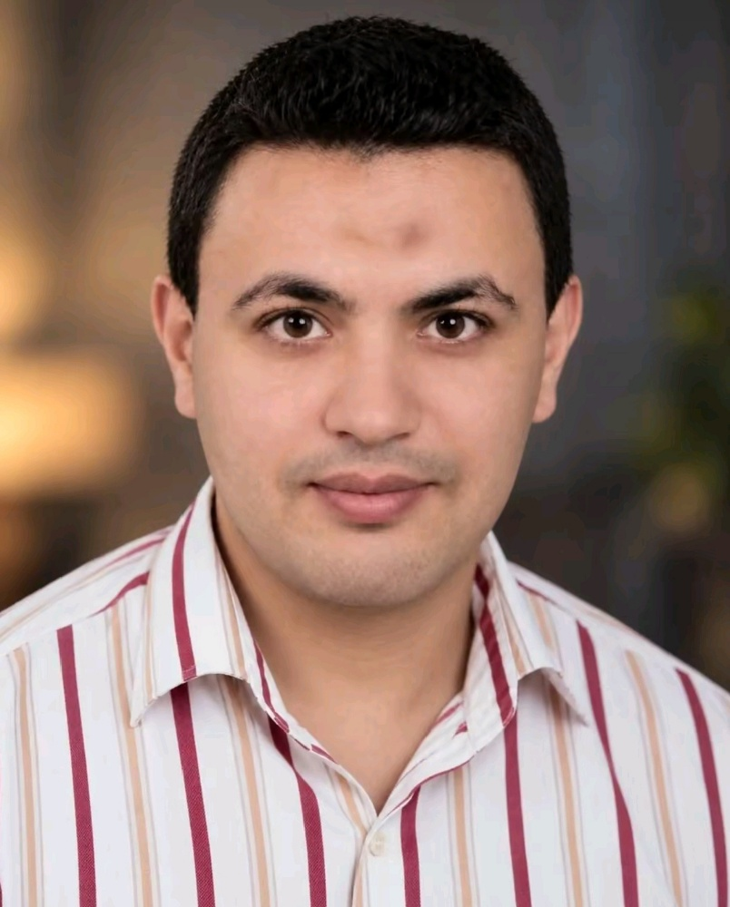

مجتمع ديني هادف يسعى لنشر الفيديوهات الدينية القيّمة والعلم النافع، ونشر الخير بهدف الصدقة الجارية، لتبقى آثارنا الطيبة ممتدة وخالصة لوجه الله تعالى.
نسأل الله العلي القدير أن يغفر لهما ويرحمهما ويسكنهما فسيح جناته، وأن يجعل هذا العمل شاهداً لهما وفي ميزان حسناتهما.
